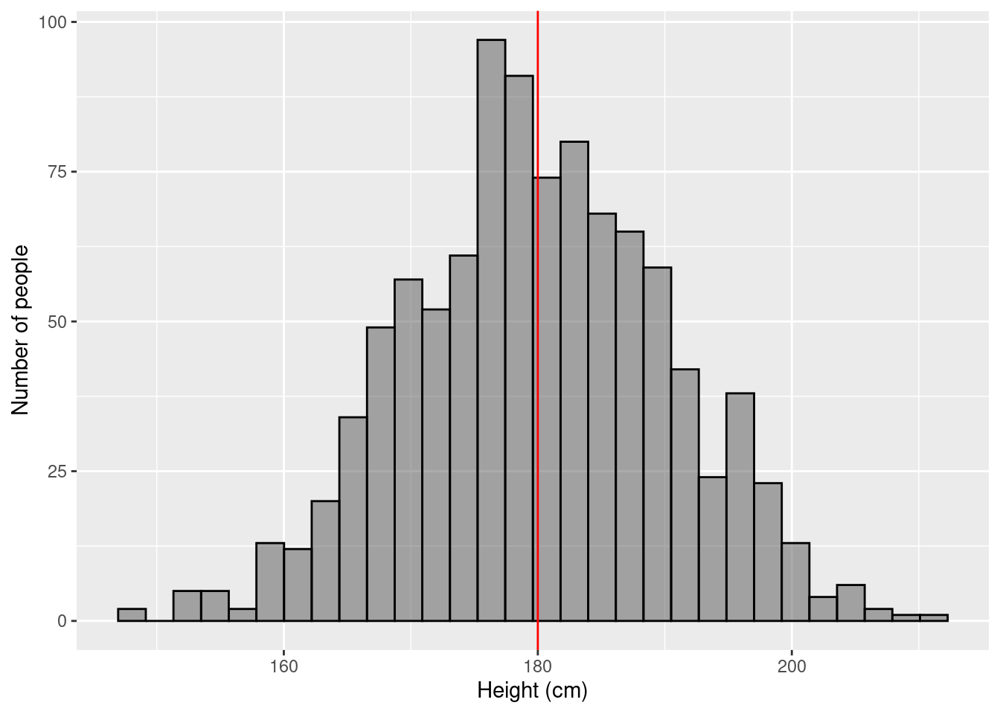
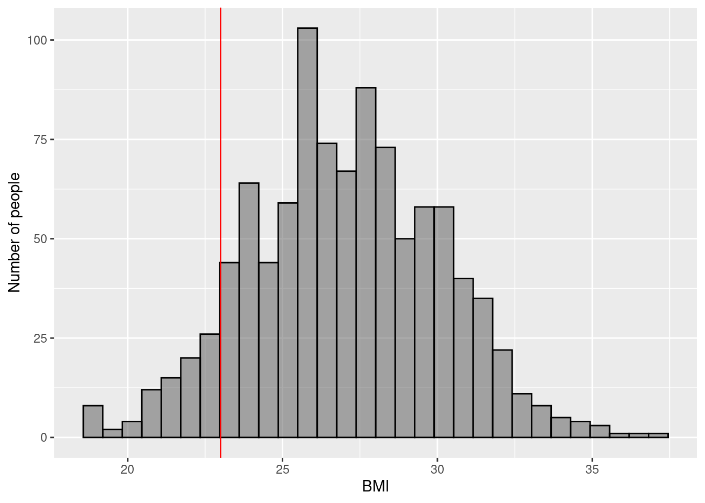
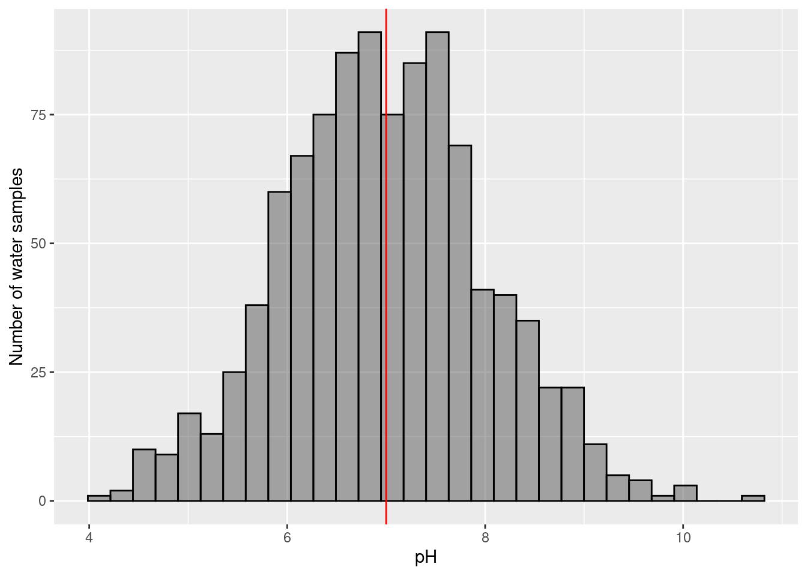
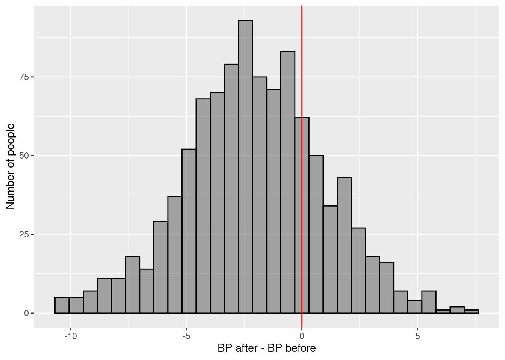
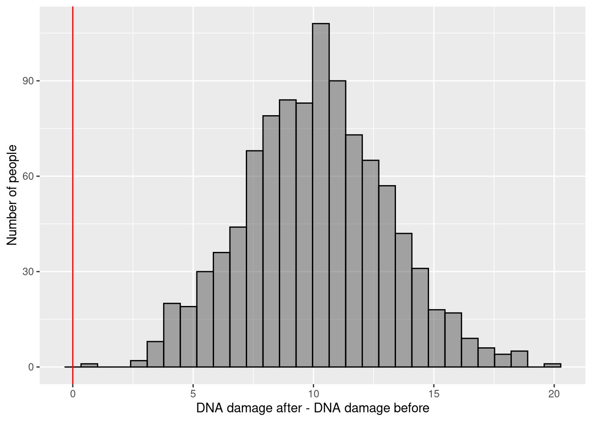
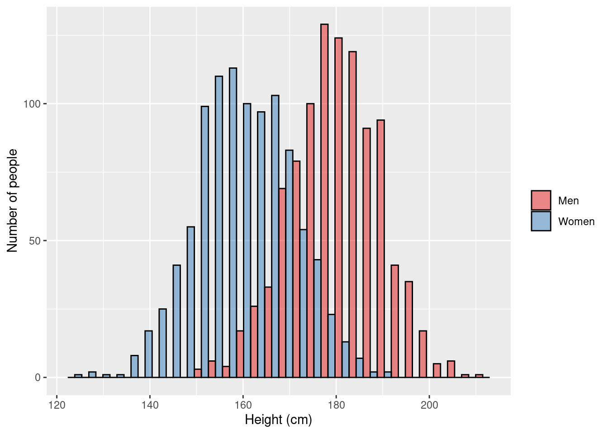
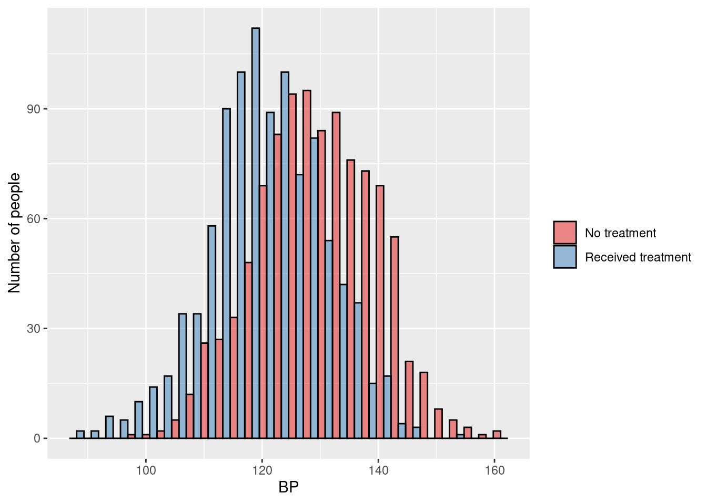
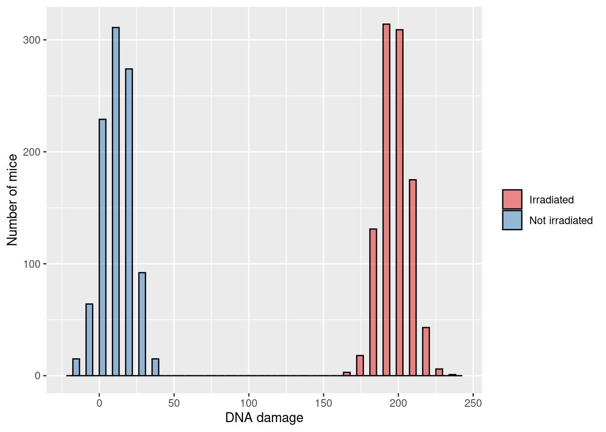
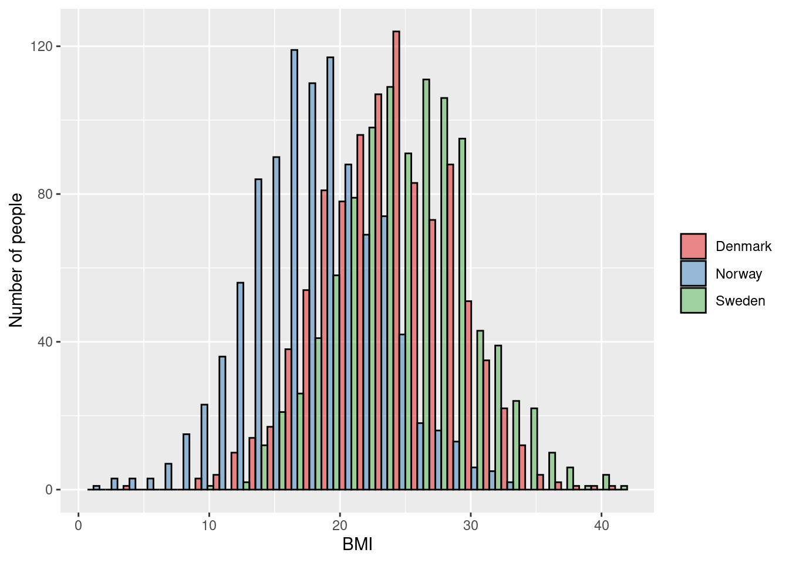
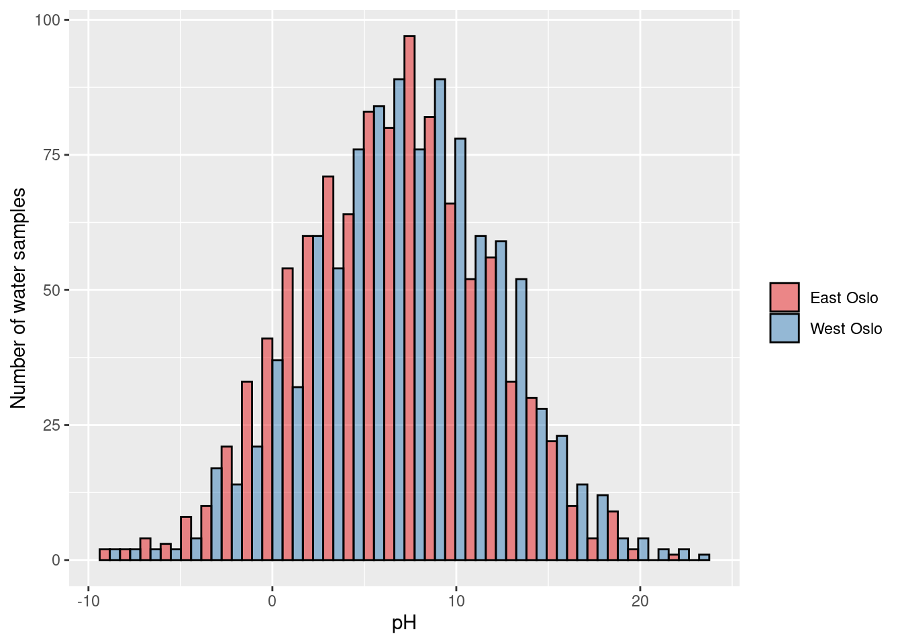

3.1 Hypothesis Testing
In science, we are interested in testing hypotheses. Statistics allows us to formally test our hypotheses. In statistical testing we have a null hypothesis (\(\text{H}_0\)) and an alternative hypothesis (\(\text{H}_1\)). We assume the null hypothesis is true and try to find the probability of what we have observed (or something more extreme). If our observations are very unlikely (assuming the null hypothesis is true) then we reject the null hypothesis in favor of the alternative hypothesis.
For example:
\[\text{H}_0: \text{It is summer}\] \[\text{H}_1: \text{It is not summer}\]
Our observed data for today is a maximum temperature of -20C. Assuming it is summer, how likely is it that today’s maximum temperature will be -20C? Not very likely! We therefore reject \(\text{H}_0\) (“it is summer”) in favor of \(\text{H}_1\) (“it is not summer”). That is, we conclude that it is not summer today.
3.2 Which Method To Use?
Deciding on the appropriate statistical method is (in principle) fairly easy. You just look at the:
- Aim (hypothesis testing or estimation of effect size?)
- Outcome type (continuous, binary, categorical, censored, count)
- Exposure (type)
- Parametric assumptions
- Dependencies in the data
and we then (essentially) use a flowchart.
3.3 Chi-Squared Test
A Chi-Squared test is used to test if two categorical variables are associated with each other.
3.3.1 Aim/Outcome/Exposure/Parametric/Dependencies
Aim: Hypothesis testing (testing if two categorical variables are associated with each other.)
Outcome: Categorical variable
Exposure: Categorical variable
Parametric assumptions: No
Dependencies: None (all observations independent)
3.3.2 Examples
- Testing if people’s country of origin (Norway/Not Norway) is associated with tuberculosis status (never had TB/has had TB)
- Testing if people’s region of origin (Europe/North America/South America/Other) is associated with marital status (Single/Married/Divorced)
- Testing if county of residence (Oslo, Akershus, etc) is associated with post-surgery infection status (No infection/mild infection/deep infection)
3.4 One Sample T-Test
A one sample t-test tests if the mean of a continuous variable differs from a specified value (generally zero)
\[\text{H}_0: \mu = 180\] \[\text{H}_1: \mu \ne 180\]
Or rephrased:
\[\text{H}_0: \text{The average height of men is equal to 180cm}\] \[\text{H}_1: \text{The average height of men is not equal to 180cm}\]
3.4.1 Aim/Outcome/Exposure/Parametric/Dependencies
Aim: Hypothesis testing (test if the mean of a continuous variable differs from a specified value)
Outcome: Continuous variable
Exposure: Does not exist
Parametric assumptions: Outcome is distributed as a Normal distribution
Dependencies: None (all observations independent)
3.4.2 Example 1
\(\rightarrow\) Testing if the average BMI of Norwegians is equal to 23
\[H_0: \mu_{\text{bmi}} = 23\] \[H_1: \mu_{\text{bmi}} \ne 23\]

3.4.3 Example 2
\(\rightarrow\) Testing if the average pH of tap water is equal to 7
\[H_0: \mu_{\text{pH}} = 7\] \[H_1: \mu_{\text{pH}} \ne 7\]

3.4.4 Example 3 (student fills in)
\(\rightarrow\)
\(H_0:\)
\(H_1:\)
3.4.5 Example 4 (student fills in)
\(\rightarrow\)
\(H_0:\)
\(H_1:\)
3.5 Two sample T-Tests
A t-test tests if the mean of a continuous variable differs between two groups. There are two kinds of two-sample t-tests: paired and unpaired.
3.6 Two-sample Paired T-Test
A paired t-test is a special case where we have \(N\) participants, and each participant has two observations (generally “before experiment” and “after experiment”). We want to test if the mean of outcome variable differs between “after” and “before”.
For example, in a weight-loss experiment, we have \(N\) participants and we want to see if the average “after weight” is different from the average “before weight”.
This is done by subtracting the outcome from one group (“before weight”) from the outcome in the other group (“after weight”) for each person (“difference in weight”), and then performing a one-sample t-test to see if the mean of this variable is different from zero.
\[\text{H}_0: \mu_{\text{after}-\text{before}} = 0\] \[\text{H}_1: \mu_{\text{after}-\text{before}} \ne 0\]
3.6.1 Aim/Outcome/Exposure/Parametric/Dependencies
Special preprocessing of data: for each participant subtract the “before” observation from the “after” observation
Aim: Hypothesis testing (test if the mean of a continuous variable measured twice for each participant differs between “before” and “after”)
Outcome: (“after weight” minus “before weight”) continuous variable
Exposure: \(\text{group}_\text{after}\) vs \(\text{group}_\text{before}\)
Parametric assumptions: Outcome is distributed as a Normal distribution
Dependencies: Paired data
3.6.2 Example 1
\(\rightarrow\) Testing if there is a difference in blood pressure before and after treatment (measured on the same person)
\[\text{H}_0: \mu_{\text{BP after}-\text{BP before}} = 0\] \[\text{H}_1: \mu_{\text{BP after}-\text{BP before}} \ne 0\]

3.6.3 Example 2
\(\rightarrow\) Testing if there is a difference in mouse DNA damage before and after irradiating (measured on the same mouse)
\[\text{H}_0: \mu_{\text{DNA damage after}-\text{DNA damage before}} = 0\] \[\text{H}_1: \mu_{\text{DNA damage after}-\text{DNA damage before}} \ne 0\]

3.6.4 Example 3 (student fills in)
\(\rightarrow\)
\(H_0:\)
\(H_1:\)
3.6.5 Example 4 (student fills in)
\(\rightarrow\)
\(H_0:\)
\(H_1:\)
3.6.6 Non-Parametric Equivalent
Wilcoxon signed-rank test. This should be used when the Normality assumption fails.
3.7 Two-sample Unpaired T-Test
An unpaired t-test is where we have two independent groups of \(N_1\) and \(N_2\) participants, and we want to test if the mean of the outcome variable differs between \(\text{group}_1\) and \(\text{group}_2\).
\[\text{H}_0: \mu_0 = \mu_1\] \[\text{H}_1: \mu_0 \ne \mu_1\]
Or rephrased:
\[\text{H}_0: \text{The average height of men is equal to the average height of women}\] \[\text{H}_1: \text{The average height of men is not equal to the average height of women}\]

3.7.1 Aim/Outcome/Exposure/Parametric/Dependencies
Aim: Hypothesis testing (test if the mean of a continuous variable differs between \(\text{group}_1\) and \(\text{group}_2\))
Outcome: continuous variable
Exposure: \(\text{group}_1\) vs \(\text{group}_2\)
Parametric assumptions: Outcomes for each group are distributed as a Normal distribution
Dependencies: None (all observations independent)
3.7.2 Example 1
\(\rightarrow\) Testing if the average blood pressure in people who didn’t receive treatment is different from people who did receive treatment
\[\text{H}_0: \mu_{\text{BP treatment}} = \mu_{\text{BP no treatment}}\] \[\text{H}_1: \mu_{\text{BP treatment}} \ne \mu_{\text{BP no treatment}}\]

3.7.3 Example 2
\(\rightarrow\) Testing if the average DNA damage in mice that weren’t irradiated is different from mice that were irradiated
\[\text{H}_0: \mu_{\text{DNA radiation}} = \mu_{\text{DNA no radiation}}\] \[\text{H}_1: \mu_{\text{DNA radiation}} \ne \mu_{\text{DNA no radiation}}\]

3.7.4 Example 3 (student fills in)
\(\rightarrow\)
\(H_0:\)
\(H_1:\)
3.7.5 Example 4 (student fills in)
\(\rightarrow\)
\(H_0:\)
\(H_1:\)
3.7.6 Non-parametric equivalent
Mann–Whitney U test (also called the Mann–Whitney–Wilcoxon (MWW), Wilcoxon rank-sum test, or Wilcoxon–Mann–Whitney test). This should be used when the Normality assumption fails.
3.8 ANOVA
ANOVA is an extension of the two-sample unpaired t-test. We have X independent groups of participants, and we want to test if the mean of the outcome variable differs between groups.
3.8.1 Aim/Outcome/Exposure/Parametric/Dependencies
Aim: Hypothesis testing (test if the mean of a continuous variable differs between some groups)
Outcome: continuous variable
Exposure: \(\text{group}_1\) vs \(\text{group}_2\) (vs \(\text{group}_3\) …)
Parametric assumptions: Outcomes for each group are distributed as a Normal distribution
Dependencies: None (all observations independent)
3.8.2 Example 1
\(\rightarrow\) Testing if average BMI levels differ across Scandinavia
\[\text{H}_0: \mu_{\text{Norway}} = \mu_{\text{Denmark}} = \mu_{\text{Sweden}}\] \[\text{H}_1: \mu_{\text{Norway}} \ne \mu_{\text{Denmark}} \text{ and/or } \mu_{\text{Norway}} \ne \mu_{\text{Sweden}} \text{ and/or } \mu_{\text{Denmark}} \ne \mu_{\text{Sweden}}\]

3.8.3 Example 2
\(\rightarrow\) Testing if average water pH levels differ between East and West Oslo
\[\text{H}_0: \mu_{\text{East Oslo}} = \mu_{\text{West Oslo}}\] \[\text{H}_1: \mu_{\text{East Oslo}} \ne \mu_{\text{West Oslo}}\]

3.8.4 Example 3 (student fills in)
\(\rightarrow\)
\(H_0:\)
\(H_1:\)
3.8.5 Example 4 (student fills in)
\(\rightarrow\)
\(H_0:\)
\(H_1:\)
3.8.6 Non-parametric equivalent
Kruskal–Wallis test